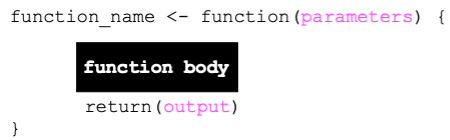
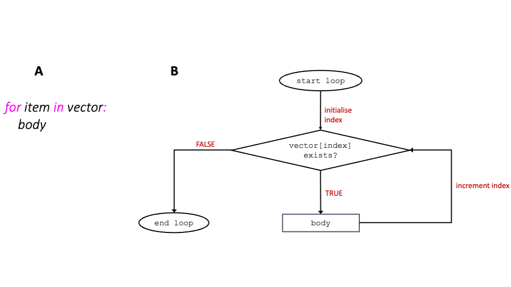
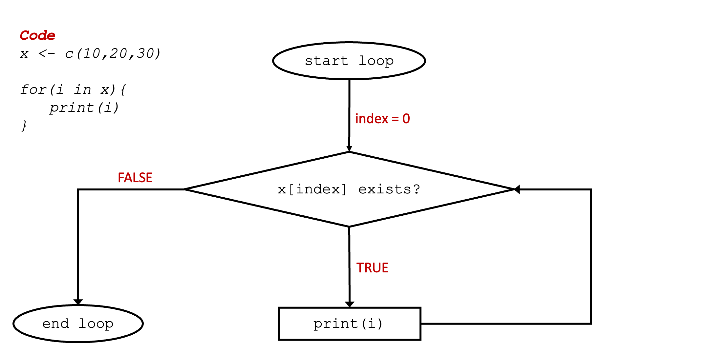

hello <- function(){
print("Hello World!")
}6 Automation in R
6.1 Creating functions
We have previously seen what functions are and how to call them. Functions are a good way to structure your code into useful chunks, each chunk being responsible for a particular task. This makes functions a good way to create reusable code. In this section we are going to learn how to create a function of our own from scratch. Functions in R are defined in the following way:

where parameters is an optional list of zero or more comma separated parameters, function body is one or more statements and the return statement returns output that can be saved in a variable. The example code below defines a simple function which is named hello. The function does not take any arguments, and it just prints “Hello World!” back.
The definition of a function will not execute the code in it. To execute the code in a function, you would need to call the function first:
hello()[1] "Hello World!"The example below is another simple function, but this time, the function defines two parameters: num1 and num2. The function below also returns the value of the sum of the two numbers (arguments) passed into the function by using the return keyword.
sum_two_numbers <- function(num1, num2){
return(num1 + num2)
}Again, to execute the code inside the function we would need to call it. The sum_two_numbers() function expects two arguments, below is an example.
sum_two_numbers(1, 1)[1] 2If you do not supply two arguments, the sum_two_numbers() would raise an error:
sum_two_numbers()Error in sum_two_numbers(): argument "num1" is missing, with no default
Parameters vs Arguments
A parameter is the variable defined in the function definition inside the parentheses, for example, num1 and num2 are parameters in the sum_two_numbers() function defined above.
An argument is the value that is passed into the function when it is called. In the call sum_two_number(1, 1) 1 and 1 are arguments.
6.1.1 Default argument values
You can assign default values to arguments in your functions, such that, if a user decides to call your function without specifying all the arguments, the arguments that were not passed would have already a predefined value. For example, in the code below, sum_two_numbers() assigns default values of 0 to parameters num1 and num2.
sum_two_numbers <- function(num1=0, num2=0){
return(num1 + num2)
}Using the sum_to_numbers() function as defined in the code above, the sum_two_number() function can be called in different ways which are shown below:
print(sum_two_numbers()) #1[1] 0print(sum_two_numbers(0, 0)) #2[1] 0print(sum_two_numbers(0)) #3[1] 0The three function calls above return the same result, that of 0. Line 1 makes use of both default values for num1 and num2. Line 2 passes the values of 0 to num1 and 0 to num2 which happen to be the same as their default values. Line 3 calls sum_two_numbers() with only one argument. The argument passed is assigned to the first parameter defined in the function, in this case this is num1. num2 will use its default value since no argument was passed for num2.
6.1.2 Positional vs named arguments
print(sum_two_numbers(1, 4)) #positional arguments[1] 5print(sum_two_numbers(num1=1, num2=4)) #named arguments[1] 5print(sum_two_numbers(num2=4, num1=1)) #not recommended[1] 5All the function calls above also return the same result, 5. However, the function calls above helps us understand better the difference between positional and named arguments. Positional arguments are arguments that are passed without specifying the name of the parameter in the call. The first line is an example of calling the sum_two_numbers() function with positional arguments. Named arguments call functions using the name of the parameters in the form \(parameter = value\). The second line is an example of calling the sum_two_numbers() function using keyword arguments. The third call is also an example of the function call using named arguments. However, it is not recommended to call functions in this way as essentially line 3 is not following the same order the parameters were defined in the definition, which could lead to confusion.
Exercise 16
Level: 
Use the sum_two_numbers() function:
What happens if you remove the
returnkeyword from its definition?Explore default argument values, positional and keyword arguments by trying the code above and calling the
sum_two_numbers()function with different arguments.
6.2 Control flow statements
As the name suggests, control flow statements are statements that control the order of which code is executed in a program. In this section we will be looking at different forms of control flow statements.
6.2.1 if statement
The if statement is used to execute a piece of code based on an expression. The syntax of the if statement is as follows:
if (expression){
statement
}Where expression is a condition that evaluates to TRUE or FALSE and statement is one or more lines of code.
If expression evaluates to TRUE, the statement part of code is executed.
total_mark <- 50
#check if student got a first class
if(total_mark > 69){
print("First")
}In the example above, no class has been printed as the student did not get a first (mark is less than 69).
6.2.1.1 if else statement
The syntax of an if else statement is as follows:
if (expression1){
statement1
} else{
statement2
}In the code above, if expression1 is FALSE, statement1 will not be executed an only the else part of the code is.
total_mark <- 50
#check if student got a first class
if(total_mark > 69){
print("First")
} else {
print("Not first")
}[1] "Not first"In the example above, since total_mark is 50, then the condition total_mark > 69 is FALSE and therefore the else part of the code is executed.
6.2.1.2 Multiple if else conditions
For situations where multiple conditions need to tested, the if else ladder can help you do that. The syntax is as below:
if (expression1){
statement1
} else if(expression2){
statement2
} else if(expression3){
statement3
} else{
statement4
}In an if else ladder, only one statement is executed. Consider the example below:
total_mark <- 50
if(total_mark > 69){
print("First")
} else if(total_mark > 49){
print("Second")
} else if(total_mark > 39){
print("Third")
} else {
print("Fail")
}[1] "Second"In the code above, the first expression is evaluated and if FALSE, control flows to the next expression. Since 50 is less than 49, expression2 is TRUE and therefore “Second” is printed.
Exercise 17
Level:
Write a program where given a month in number format as an input, it will print that month’s name back. For example, month = 10 will print October.
6.2.2 for loop
A for loop iterates over items in a sequence (e.g., vector).

for loop (A) together with flowchart representation (B)The way for loops work is better explained by the animation below which shows how the code in the left-hand side of the animation is executed.
 As shown in the animation above, the for loop continues to iterate over each item in vector x until the end of the vector is reached.
Exercise 18
Level:
Print the following vector one word on a new line using a for loop.
l <- c("keep","calm", "and", "carry", "on")
Exercise 19
Level: 
Draw a half pyramid as shown below using asterisks.
*
* *
* * *
* * * *
* * * * *
Tip
Use nested loops: one loop inside another, with an outer loop to handle rows and an inner loop to handle columns.
6.3 Further reading
There are several good resources for R tutorials and exercises. Below are a few recommended ones for you to explore.
Joining Datasets: This tutorial goes through a well explained example of different ways you can join two datasets together.
Linear algebra and matrices This handout contains a detailed description of linear algebra and matrices with R code examples.
R for Data Science book: I recommend this book as a next step if you are interested in advancing your R skills to the next level.